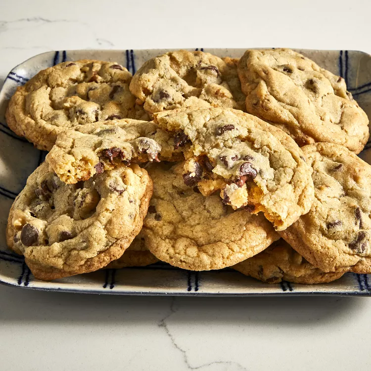

Chocolate Chip Cookies

Description
This is a simple recipe for a classic dessert: chocolate chip cookies. Easy to make, easy to eat!
This requires a few basic ingredients and a few simple steps to achieve perfection. Serve warm with a glass of milk!
Ingredients
- Butter
- Eggs
- Vanilla
- Baking Soda
- Water
- Salt
- Flour
- Chocolate Chips
Steps
- Beat the butter and sugars, then beat in the eggs and vanilla.
- Dissolve the baking soda in hot water and add to the mixture.
- Stir in the flour, chocolate chips, and walnuts.
- Drop dough onto a prepared baking sheet.
- Bake until the edges are golden brown.